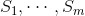
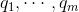
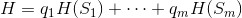

17.3 分割之熵
迄今为止，我们所做的是计算单组标记数据的熵（即“不确定性”）。实际上，决策树每前进一步，都要提出一个问题，而它的答案会把数据分割为一个或（更可能的情况是）多个子集。例如，“是否有五条以上的腿？”这个问题能够把动物分为五条腿以上的（如蜘蛛）和非五条腿以上的（如针鼹）。
相应地，我们希望通过某种方法对数据集的分割效果来表示熵。对于某个划分方法，如果得到的子集的熵较低（即确定性很高）的话，我们就说这个划分方法的熵较低；反之，如果得到的子集的（数量很多并且）熵较高（即不确定性很高）的话，我们就说这个划分方法的熵较高。
例如，前面“澳大利亚五分硬币”就是一个非常不明智（尽管这次非常幸运！）的问题，因为它把剩余的动物分为 S
1 ={ 针鼹 } 和 S
2 ={ 针鼹之外的一切动物 } 两个子集，而 S
2 这 个集合不仅过大而且高熵。（虽然 S
1 子集没有熵，但它只能代表剩余“类别”中的一小部分。）
在数学上，如果我们把数据集 S 划分为数据子集  ，各个子集相应数据量所占比例 为  ，那么我们就可以通过如下加权和的形式来计算这次划分的熵：

下面是具体的实现代码：
def partition_entropy(subsets):
"""find the entropy from this partition of data into subsets
subsets is a list of lists of labeled data"""
total_count = sum(len(subset) for subset in subsets)
return sum( data_entropy(subset) * len(subset) / total_count
for subset in subsets )
 这种方法的一个问题是，通过具有许多不同的值的属性进行数据划分的话，往往会由于过度拟合而导致过低的熵。例如，假设你为一家银行工作，并尝试用一些历史数据作为训练集，建立一个决策树来预测哪些客户很可能拖欠抵押贷款。我们进一步假设数据集提供了每个客户的社会保险号（SSN）。如果利用 SSN 号码对数据集进行划分，那么得到的每个子集都只含有一个人员，这样的话它们的熵必定为 0。但是，这个依赖于 SSN 号码的模型不一定适用于该训练集之外的数据。出于这个原因，你应该尽量避免使用（或直接 去掉，如果合适的话）有大量的可能取值的属性来创建决策树。
这种方法的一个问题是，通过具有许多不同的值的属性进行数据划分的话，往往会由于过度拟合而导致过低的熵。例如，假设你为一家银行工作，并尝试用一些历史数据作为训练集，建立一个决策树来预测哪些客户很可能拖欠抵押贷款。我们进一步假设数据集提供了每个客户的社会保险号（SSN）。如果利用 SSN 号码对数据集进行划分，那么得到的每个子集都只含有一个人员，这样的话它们的熵必定为 0。但是，这个依赖于 SSN 号码的模型不一定适用于该训练集之外的数据。出于这个原因，你应该尽量避免使用（或直接 去掉，如果合适的话）有大量的可能取值的属性来创建决策树。